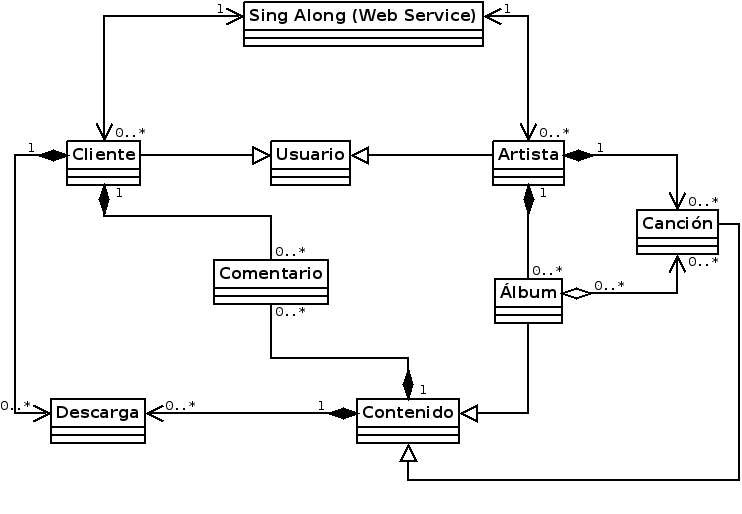

Seminario 3 Solución
Ejercicio 1. Dibujar un diagrama de análisis estático para el proyecto SingAlong

Ejercicio 2. Extraer otros requerimientos de dominio en formato texto. Para hacerlo, el diagrama de análisis estático puede ser utilizado como punto de partida, identificando los conceptos que no son explicados de forma clara por el diagrama. Los requerimientos textuales no deben "sobreponerse" con la información que el diagrama ya expresa.
Otros requerimientos de dominio:
- Cada vez que se registre un nuevo producto (canción o álbum), se le asignará un ID. Este ID se puede generar de forma aleatoria o simplemente incrementado un contador cada vez que se registre un producto.
- Es necesario que la comunicación entre la plataforma Web y el usuario sea mediante el standard ASCII
- El sistema no puede compartir información personal de los usuarios, excepto su nombre o username
- El sistema dejará comentar un producto, si el usuario se ha comprado/descargado el item previamente
- El sistema registrará nuevos usuarios, siempre que el username no se este utilizando ya
- El sistema habilitará la descarga de productos, siempre que se recibirá un recibo por parte de Paypal
- La plataforma SingAlong deberá estar disponible las 24hrs, 7 días a la semana
- Si la plataforma Paypal no responde, no se podrán comprar canciones temporalmente